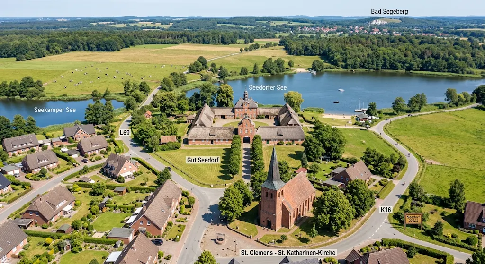

Geräumig
120 m² Wohnfläche mit komfortabler Raumaufteilung für bis zu 6 Personen
Strandnähe
Nur etwa 6 km vom wunderschönen Plöner See und der Ostseeküste entfernt
Vollausgestattet
Modernes Landhaus mit Wintergarten, Terrasse und allen Annehmlichkeiten
Familienfreundlich
Ideal für Familien, Freundesgruppen und alle, die Natur und Ruhe suchen

ANKOMMEN UND DURCHATMEN
Landhaus mit Charakter.
Freiraum für Ihre Auszeit.
Im Reethus Birgit verbinden sich der Charme eines liebevoll renovierten Landhauses und der Komfort eines modernen Zuhauses. Genießen Sie den Wintergarten, die Terrasse und den weitläufigen Garten – zu jeder Jahreszeit.
Das Reethus kennenlernenIHRE AUSZEIT BEGINNT HIER
Seedorf wartet auf Sie.
Fragen Sie Ihren Wunschtermin an – wir freuen uns auf Sie.